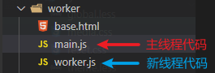

# Web Worker 使用教程
JavaScript 是一个单线程语言，这会导致一个问题，当一个页面中有大量的数据，需要计算这些数据时，占用当前的线程，这时候用户点击网页，页面的交互会变得更慢了。
我在实际项目中遇到的一个问题，当时做了一个数据展示的页面，频繁地渲染页面，每次有几千条数据。
上面例子中，如果我们有两个线程就好了，一个线程负责计算数据，一个线程负责展示数据和页面的交互逻辑。
# 1、介绍
那么什么是 Web Worker 呢？
简单地说，Web Worker 就是开辟一个新的线程的函数。
我们在访问一个网页窗口时，都会新建一个线程，注意只限一个，我们通常写的 js 都在这个线程上运行。
如果使用 Web Worker 可以创建一个新的线程，如果项目中有大量的数据的计算，可以放到这个线程中，计算好之后，结果返回给主线程，这样用户体验会大幅度提高。
# 2、快速开始
demo 目录如下

我们在主线程中四件事:
创建 worker
给新建的线程发送消息
接受新建的线程返回的数据
关闭线程
// main.js 文件
// 1. 创建 ：参数为文件名
var worker = new Worker("worker.js");
// 2. 给发送消息
worker.postMessage({
cmd: "add",
num: 12,
});
// 3. 接受 worker 返回的数据
worker.onmessage = function (event) {
console.log(event.data);
};
// 4. 关闭
worker.terminate();
在新线程中也做四件事：
接受主线程发来的数据
处理对应的逻辑或运算数据
返回计算结果
关闭线程
// worker.js 文件
// 1. 监听 self 等于 this
self.onmessage = function (e) {
let num = e.data.num;
// 2. 在这里计算复杂的计算
if (e.data.cmd == "add") {
num++;
}
// 3. 将结果返回给主线程
self.postMessage(num);
// 4. 关闭线程
self.close();
};
# 3、 更多 API
在主线程中是一个 Worker 的构造函数，有以方法和下属性。
const worker = new new Worker("worker.js", { name: "worker1" })();
worker.onerror: 错误监听方法
worker.onmessage: 监听 worker 线程发来的数据， 数据在 Event.data 中
worker.postMessage(): 发送消息给 worker 线程
worker.terminate()：销毁 worker 线程
在 worker 线程中有一下方法和属性
this.name : 属性，线程名字，主线中定义
this.onmessage: 函数，监听主线程发来的数据
self.postMessage(): 方法，向主线程发送数据
self.close(): 方法，关闭线程
# 4、注意事项
（1）不共享地址
也就是说，主线程传来的引用值是复制的，在新线程修改后，主线程的数据不会改变。
// 主线程
let msg = {
cmd: "start",
num: 12
}
worker.postMessage(msg);
console.log(msg.num) // 12
// worker 线程
self.onmessage = function (e) {
e.data.num++;
self.postMessage(e.data);
};
（2）新线程中，没有 window 对象
没有 window 对象，也就是说没法操作 DOM, 也不能使用 alert。不过可以发送 Ajax 请求